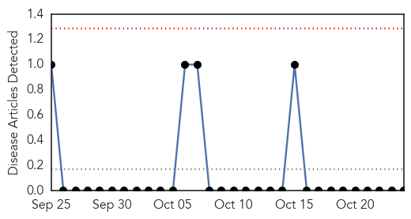
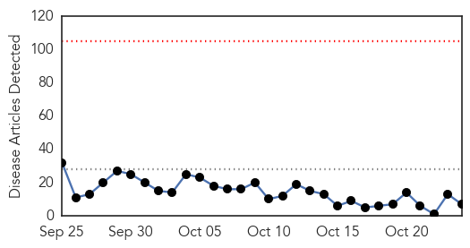

Hemmorhagic Fever
30-Day Web Trend
0 alerts, 0 warnings

30-Day Twitter Trend
0 alerts, 0 warnings

Article Locations

Article Confidences

Top Articles:
-
No articles found for Oct 24, 2015
Top Tweets:
-
No tweets found for Oct 24, 2015
Dengue Fever
30-Day Web Trend
0 alerts, 0 warnings

30-Day Twitter Trend
4 alerts, 0 warnings

Article Locations

Article Confidences

Top Articles:
- 0.995
- Hospitals in Asia overwhelmed with growing number of dengue cases
- 0.994
- Deadlier than dengue this year, malaria claims 26 lives
- 0.922
- Dengue cases in Davao region down by 54%
- 0.891
- Fears of disease in the Philippines after Typhoon Koppu
- 0.866
- Dengue death toll reaches 97 so far this year
- 0.793
- Yelp Reviews Can Take Food Poisoning Alerts Viral . News
- 0.695
- Dengue Awareness in North Chennai
Top Tweets:
- 0.885
- Flavivirus news: Govt girds up to fight rising cases of swine flu, dengue - Times of India: Gov... https://t.co/temqfLA5qO pathogenposse
- 0.630
- Flavivirus news: Dengue cases in Davao region down by 54% - Minda News: Dengue cases in Davao r... https://t.co/F2jXSpsk3B pathogenposse
- 0.538
- Flavivirus news: Dengue cases double in a year - Deccan Herald: Deccan HeraldDengue cases doubl... https://t.co/EEJ1FkcL3v pathogenposse